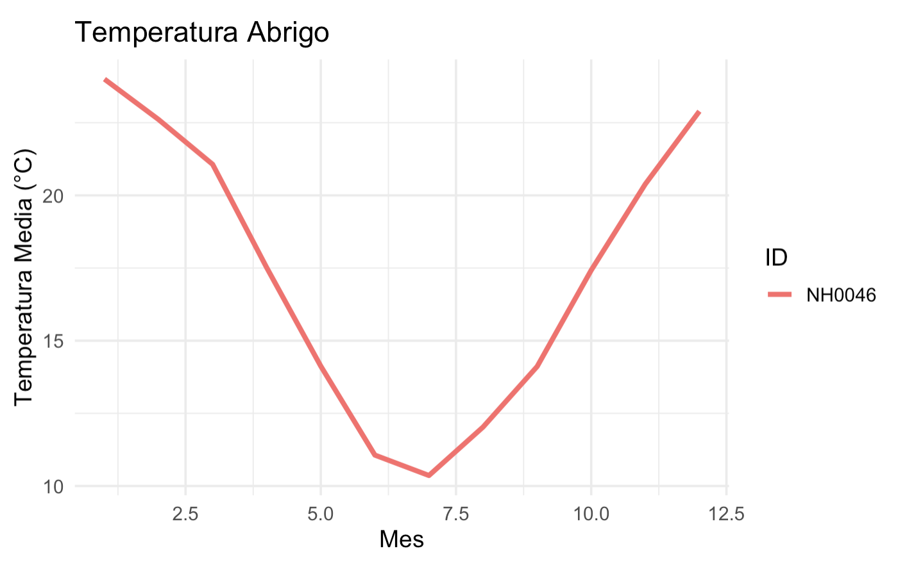

El objetivo del PaqueteAgrometeorologico es brindar herramientas al usuario en base a funciones, para que pueda trabajar de manera mas eficiente en el ambito meteorologico.
Autores
- Juan Ignacio Castillo Estudiante de la licenciatura en Ciencia de Datos
- Santino Almiron Nanni Estudiante de la licenciatura en Ciencia de Datos
Instalacion
Puedes instalar la versión de desarrollo de PaqueteAgrometeorológico desde GitHub con:
# install.packages("pak")
pak::pak("juaniii29/PaqueteDatosMeteorologicos")Funciones
convertir_cf(): Toma un valor numerico en grados celsius y lo convierte a grados fahrenheit.
convertir_fc(): Toma un valor numerico en grados fahrenheit y lo convierte a grados celsius.
clasificar_temperatura(): Toma un valor numerico en grados celsius y lo clasifica dependiendo de su magnitud.
tabla_resumen_temperatura(): Toma un dataset con informacion sobre estaciones meteorologicas y devuelve un resumen. sobre este.
grafico_temperatura(): Toma un dataset con informacion sobre estaciones meteorologicas y devuelve un grafico de la temperatura media mensual por estación.
Ejemplo
Este es un ejemplo basico en el que se muestra una de las tantas funciones del paquete:
library(PaqueteAgrometeorologico)
convertir_fc(c(0, 32, 100))
#> [1] -17.77778 0.00000 37.77778
Contribuciones
Si deseas contribuir al paquete, ya sea para añadir nuevas funciones, corregir errores o mejorar la documentación, sigue estos pasos para asegurar una colaboración fluida:
Crea una rama para tu contribución : Para mantener el historial de cambios ordenado, comienza creando una nueva rama donde trabajarás en tu contribución. Puedes hacer esto ejecutando git checkout -b nombre-de-tu-rama.
Haz un fork y clona el repositorio: Realiza un fork de este repositorio en tu cuenta de GitHub. Luego, clona el repositorio en tu máquina local para trabajar en los cambios de forma segura y aislada.
Realiza tus cambios y abre un pull request: Implementa las mejoras o nuevas funciones en tu copia del repositorio. Cuando termines, abre un pull request (PR) hacia la rama principal del proyecto, proporcionando una descripción clara y detallada de tu contribución. Asegúrate de documentar los cambios y, si es posible, añade pruebas que respalden tus modificaciones para facilitar la revisión.
Agradecemos tu colaboración en paqueteprueba y te recordamos seguir el código de conducta para promover un ambiente de respeto y profesionalismo en la comunidad.